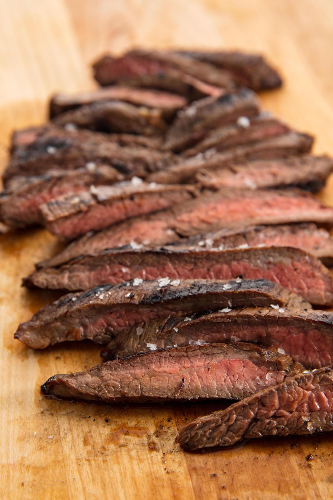

Savory Marinated Flank Steak

Description
Mouth-watering and flavorful, cut into this steak like butter.
It's a great base for any meal - tacos, salad, or as the star of
the show! Just serve with a side dish.
Ingredients
- 1 cup barbecue sauce
- 1/4 cup lemon juice
- 1/2 cup burgundy wine or beef broth
- 1 beef flank steak (2 lbs)
Steps
- In a small bowl, whisk barbecue sauce, wine
and lemon juice until blended.
- Pour 1 cup marinade into a shallow dish.
Add beef and turn to coat.
- Cover; refrigerate 4 hours or overnight.
Cover and refrigerate remaining marinade.
- Drain beef, discarding marinade in dish.
- Grill steak, covered, over medium heat until
meat reaches desired doneness (for medium-rare,
a thermometer should read 135°; medium, 140°;
medium-well, 145°), 6-8 minutes on each side.
- Let stand 5 minutes before thinly slicing across
the grain.
- Serve with reserved marinade.